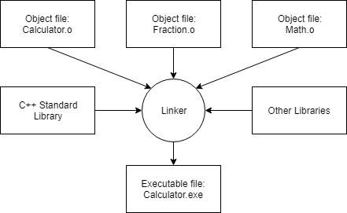

C++ Notes
Table of Contents
1. Introduction
These are some notes for the C++ course from Learn CPP
1.1. Compilers, Linkers and Libraries.
Development of C++, or any software, generally follows a similar process, as outline below.

Figure 1: C++ Development Process
This section concentrates on compiling, linking stages (Steps 4 and 5 in the diagram).
1.1.1. Compilation
In order to compile a C++ program we require what is called a compiler. A compiler has 2 main functions:
- Checks the code for any syntax errors - Compilation will not succeed if there are any syntax errors.
- Translates the code into machine language file called an object file. - These are files with an .o extension.
So if there are three C++ files (ending in .cpp) three object files will be created.

Figure 2: Compilation of source code
1.1.2. Linking
Once the compiler has compiled the source code files into object code files, the linker kicks in. A linker has 3 functions:
- Creates a single executable program by linking all of the object code files created by the compiler.
- Linking library files. - A library file contains precompiled code used for common tasks. An example is the <iostream> library that is most commonly used for outputting to the screen and taking in input from a keyboard.
- Ensures cross-file dependencies are resolved properly. - If something is defined in one .cpp file, and then the definition is used in another .cpp file, the linker connects the two together. If the linker is unable to connect the two together, it results in a linker error.
An illustration is provided below.

Figure 3: Linking Process Illustration.
1.1.3. Compiling a C++ Program
The command used to compile a C++ program (for example hello_world.cpp) is,
g++ -o hello_word hello_world.cpp
1.1.4. Makefiles
There are special files called Makefiles which specifies the compilation options (e.g. what libraries to link).
Further area of research
2. C++ Basics
2.1. Variable
In C++ programs, data used in the program is stored in RAM. Conceptually, each piece of data, stored at some memory address, is called a value.
C++ does not allow direct access to memory locations. Instead, it allows indirect access through what's called objects. An object is a region of storage (memory) that has a value, and other associated properties. This means that rather than saying "go get this object at address 7465", we say "go and get the value stored by the object".
A variable is an object with an identifier (name).
At compilation time, the compiler will lay out where all of the normal variables are in memory as offsets from some base address (that will be provided at runtime). So the compiler will say x is at (base address + 4), y is at (base address + 8), etc… Then wherever the compiler sees x in our source code, it generates compiled code that uses (base address + 4) instead. That way the compiler doesn't have to worry about where exactly in memory x should live, it just needs to make sure that all the variables used are separated enough so they don't overlap, and the actual final addresses are calculated at runtime. For example, when the function containing the variables is called, the base address gets assigned – let's say at memory address 136. And since the compiler put x at (base address + 4), the executable code will access memory address (136 + 4), which is memory address 140.
2.2. Variable Initialisation
In C++, there are 4 ways to initialize a variable:
int a; // no initialisation int b = 5; // copy initialisation int c( 6 ); // initialiser in parentheses int d { 7 }; // initialiser in braces
Excluding the no initialisation, the 3 other types o initialisation are described below.
2.2.1. Copy Initialisation
In copy initialisation, the value on the right hand side of the "=" sign is copied to the variable created on the left hand side.
Example,
int a = 5;
2.2.2. Direct Initialisation
For simple types (e.g. int) direct initialisation is the same as copy initialisation. For more complex types, direct is more efficient.
Example,
int d ( 10 );